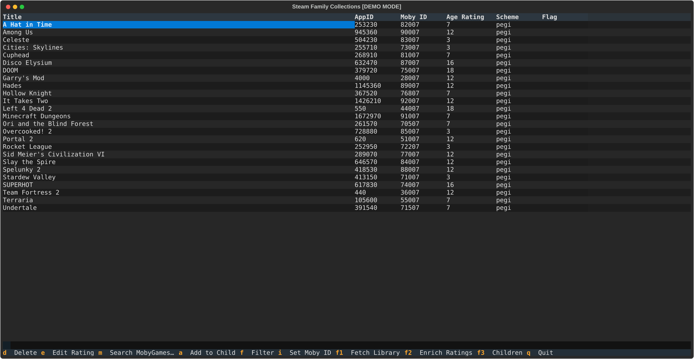
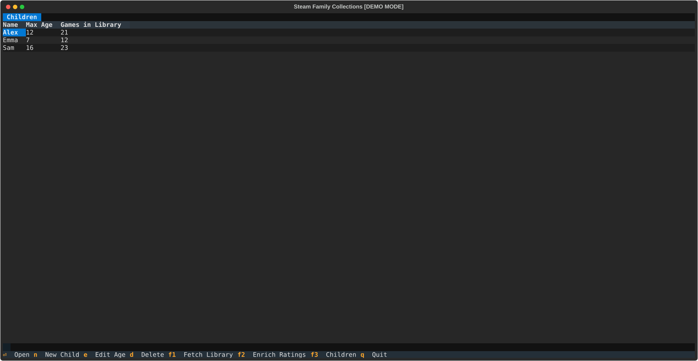
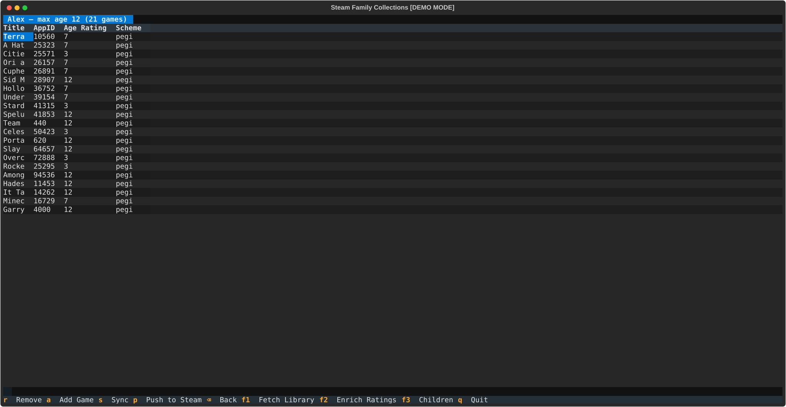

Usage
The workflow has four steps: fetch your library, enrich ratings, set up child profiles, and push to Steam.
Keyboard shortcuts
| Key | Action |
|---|---|
F1 |
Fetch Steam library |
F2 |
Enrich ratings (Steam store + MobyGames) |
F3 |
Toggle Children screen |
Q |
Quit |
Library screen
| Key | Action |
|---|---|
D |
Delete selected game and its rating |
E |
Edit age rating manually |
M |
Search MobyGames with a custom term |
I |
Set MobyGames ID manually |
A |
Add selected game to a child's collection |
F |
Cycle filter: all → unrated → ambiguous |
Children screen
| Key | Action |
|---|---|
N |
New child profile |
E |
Edit max age |
D |
Delete profile |
Enter |
Open child's collection |
Collection screen
| Key | Action |
|---|---|
A |
Add an eligible game |
R |
Remove selected game |
S |
Sync (recompute from current ratings) |
P |
Push collection to Steam |
Backspace |
Back to Children screen |
Step 1 — Fetch library
Press F1 to pull your owned games from the Steam API. New games are added to ~/.local/share/steam-family-collections/games.json. Games already in the database are not overwritten.

Step 2 — Enrich ratings
Press F2 to look up age ratings. The app runs two passes:
- Steam store pass — scrapes the Steam store page for each unrated game (1 second per game to respect rate limits)
- MobyGames pass — searches MobyGames for games still unrated after the Steam pass; you may be asked to disambiguate titles
When multiple candidates match a title, a disambiguation dialog appears. Select the correct entry or press Escape to skip.
Use F to filter the table to unrated or ambiguous games only, making it easier to focus on what needs attention.
Tip: If a game is hard to find automatically, press M to search with a custom term, or I to enter the MobyGames ID directly.
Step 3 — Manage children
Press F3 to open the Children screen.

Press N to create a new child profile. Enter a name and a maximum age rating (0–18). The library is populated immediately from already-rated games.
Press E on an existing profile to adjust the max age — the library is resynced automatically.
Step 4 — Push to Steam
From the Children screen, press Enter on a child to open their collection.

Use A to add individual games, R to remove them, and S to resync the entire collection against current ratings.
When ready, press P to push the collection to Steam.
Close Steam first
Steam must be fully closed before pushing. The app writes to Steam's cloud-storage file on disk; if Steam is running it will overwrite your changes on next sync.
A backup of the existing collection file is created automatically before each push.
Approving games in Steam
After pushing, you need to approve the games in Steam for your child:
- Open Steam and go to Library → Collections. Select the collection you just pushed.
- Click the first game in the collection sidebar on the left.
- Scroll to the bottom of the collection in the sidebar, then Shift+click the last game to select all.
- Right-click the selection and choose Family → Approve for <child>.
Tips
- Run
F2periodically as your library grows — new games start unrated. - Use
F(filter) to work through unrated games in batches. - The
S(sync) button on the collection screen is useful after a bulk ratings enrichment session. - Child profiles are stored in
~/.local/share/steam-family-collections/children/as plain JSON — easy to back up.